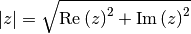
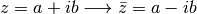
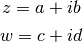
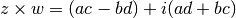
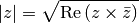
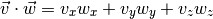
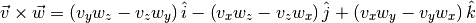
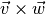
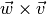

Clases¶
Python es un muy buen lenguaje orientado a objetos (como Java), por lo que en él es muy sencillo definir y trabajar con clases. En las secciones anteriores hemos tenido la oportunidad de utilizar los métodos de cadenas y listas para resolver varios ejercicios, lo que indica que, en su implementación, ambos tipos son clases, cosa que también es cierta para los demás (aún los números son clases!).
En esta sección veremos como definir nuestras propias clases y vamos a aprender cómo asociarle sus correspondientes atributos y métodos.
Definición e inicialización¶
En general, una clase es un objeto en el que se reúnen varias funciones (llamadas métodos) y variables (llamadas atributos), con el objeto de que los métodos puedan compartir un mismo conjunto de datos, sobre el que puedan operar de cierta forma para llegar al resultado que desea el usuario.
En Python las clases se definen con la palabra class y se inicializan usando el método __init__, que es una función cuyo primer argumento siempre debe ser la palabra self. Los argumentos que vengan después de self van a usarse para darle valores iniciales a los atributos de la clase. Miremos como se hace con un ejemplo:
class NumeroComplejo:
def __init__(self, r, i):
self.real = r
self.img = i
Como se infiere de su nombre, esta clase se ha definifo para representar números complejos, por lo que debe tener dos atributos: una parte real y una parte imaginaria. En este caso, éstos están dados por real e img, respectivamente.
Nota
Es muy importante notar que para diferenciar los atributos de una clase de las variables locales, en Python todo atributo debe ir precedido de self., como en self.real y self.img.
Además de self, podemos ver que __init__ recibe los argumentos r e i, que se utilizan para inicializar los atributos mencionados.
Para crear una instancia de la clase es necesario llamarla por su nombre, con el número de argumentos declarados en __init__ (sin contar self) y asignársela a una variable, así:
In [1]: z = NumeroComplejo(1, 2)
Para comprobar que la inicialización ha funcionado correctamente, podemos inspeccionar los atributos de la clase directamente:
In [2]: z.real
Out[2]: 1
In [3]: z.img
Out[3]: 2
De esta forma puede certificarse que, efectivamente, z es un número complejo con parte real 1 y parte imaginaria 2.
Una vez definida una instancia, también es posible modificar sus atributos por medio de asignación, así:
In [4]: z.real = 5
In [5]: z.real
Out[5]: 5
Métodos¶
Como ya dijimos, los métodos son funciones asociadas a una clase que operan sobre sus atributos. Por ejemplo, a la clase anterior le podemos añadir un método que calcule el módulo de un número complejo con la fórmula:

Para ello redefinimos NumeroComplejo para agregarle un nuevo método modulo, así:
class NumeroComplejo:
def __init__(self, r, i):
self.real = r
self.img = i
def modulo(self):
return (self.real**2 + self.img**2)**(1/2)
Nota
Al igual que para __init__, el primer argumento de todo método debe ser self, para que indicar que hace parte de la clase.
Con ello obtenemos el siguiente resultado para el módulo del número complejo que habíamos definido arriba:
In [6]: z.modulo()
Out[6]: 2.23606797749979
Aquí puede parecer un poco extraño que modulo se llame sin argumentos, cuando al definirlo en la clase se le había pasado a self como primer argumento. Esto se debe a que self no es un argumento en sí, sino que sólo se usa para señalar que una función es un método de la clase, como ya se mencionó.
Otra operación que puede hacerse con números complejos es obtener su
conjugado. El conjugado de un complejo  , es un nuevo número complejo
que se denota
, es un nuevo número complejo
que se denota  y se define como
y se define como

Para obtener el conjugado podemos entonces agregar un nuevo método a nuestra clase, de la siguiente forma:
class NumeroComplejo:
def __init__(self, r, i):
self.real = r
self.img = i
def modulo(self):
return (self.real**2 + self.img**2)**(0.5)
def conjugado(self):
return NumeroComplejo(self.real, -self.img)
Para calcular el conjugado de z sólo debemos llamar el método:
In [7]: z1 = z.conjugado()
In [8]: z1.real
Out[8]: 1
In [9]: z1.img
Out[9]: -2
Finalmente, vamos a añadir una función que retorne el producto de dos números complejos. Dados dos números

su producto está dado por:

Para ello podemos escribir el siguiente método, llamado producto, en nuestra clase:
class NumeroComplejo:
def __init__(self, r, i):
self.real = r
self.img = i
def modulo(self):
return (self.real**2 + self.img**2)**(0.5)
def conjugado(self):
return NumeroComplejo(self.real, -self.img)
def producto(self, w):
r = self.real * w.real - self.img * w.img
i = self.real * w.img + self.img * w.real
return NumeroComplejo(r, i)
In [10]: w = NumeroComplejo(4, -7)
In [11]: x = z.producto(w)
In [12]: x.real
Out[12]: 18
In [13]: x.img
Out[13]: 1
Para comprobar que producto está funcionando correctamente podemos usar la siguiente fórmula, que relaciona el módulo de un número complejo con su conjugado:

In [14]: z2 = z.producto(z.conjugado())
In [15]: (z2.real)**(1/2) == z.modulo()
Out[15]: True
- Ejercicios
Definir una clase Vector3D para representar vectores en 3 dimensiones, con las siguientes características:
Tres atributos: x, y, y z, usados para guardar sus coordenadas.
Un método llamado punto que calcule el producto punto entre dos vectores, mediante la fórmula:

Por ejemplo, para los dos vectores definidos a continuación:
In [16]: v = Vector3D(2, 0, 1) In [17]: w = Vector3D(1, -1, 3)
Su producto punto es:
In [18]: v.punto(w) Out[18]: 5
Un método llamado cruz que calcule el producto cruz entre dos vectores mediante la fórmula:

Por ejemplo, para los vectores definidos arriba el producto  es igual a:
In [19]: u1 = v.cruz(w) In [20]: u1.x, u1.y, u1.z Out[20]: (1, -5, -2)
Mientras que  es:
In [21]: u2 = w.cruz(v) In [22]: u2.x, u2.y, u2.z Out[22]: (-1, 5, 2)
Redefinir la clase anterior para que en lugar de los atributos, x, y, y z, tenga uno sólo llamado coord, que sea una lista de tres elementos. También redefinir los métodos según esto.
Nota
En el método __init__ revisar que la lista que se va a guardar en coord tenga exactamente tres elementos. Si tiene más o menos, asignarle a coord una lista vacía.
Definir una clase Tiempo para representar una hora del día, que tenga las siguientes condiciones (Tomado de Aprenda a pensar como un programador con Python):
Tres atributos: h, m y s, para guardar las horas, minutos y segundos.
Un método llamado imprimir_tiempo que imprima el tiempo almacenado en una instancia, de la siguiente forma:
In [23]: t1 = Tiempo(16, 7, 1) In [24]: t1.imprimir_tiempo() 16:07:01 In [25]: t2 = Tiempo(2, 6, 32) In [26]: t2.imprimir_tiempo() 02:06:32
Un método sumar que sume dos tiempos diferentes.
Nota
Sumar cada atributo por separado, es decir, segundo con segundos, minutos con minutos y horas con horas.
Para obtener el resultado de los segundos y los minutos, la suma debe realizarse módulo 60. Por ejemplo, si un Tiempo tiene 50 segundos y otra 15, su suma no debe darnos 65 sino 5, lo que se obtiene como:
(50 + 15)%60 = 5
Para las horas, tomar la suma módulo 24.
Verificar si la suma de los segundos, sin tomar el módulo, es mayor o igual a 60, y si lo es, incrementar en 1 el valor de los minutos. Tener en cuenta lo mismo para la suma de los minutos y el valor de las horas.
Un ejemplo de este método es:
In [27]: t1 = Tiempo(23, 50, 45) In [28]: t2 = Tiempo(3, 40, 40) In [29]: t3 = t1.sumar(t2) In [30]: t3.imprimir_tiempo() 03:31:25